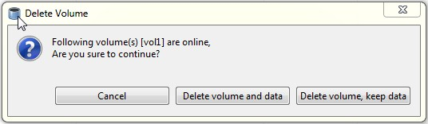

Deleting a Volume
You can delete a volume from your storage environment, as required.
To delete a volume, perform the following steps.
- Choose from the menu, toolbar, or right click and select the Volume and select Delete Volume.
The Delete Volume window appears. If the volume is currently running, you are asked to confirm before proceeding with the volume deletion

- If you wish to delete the volume permanently, click Delete Volume and Data.
- If you wish to keep the data but delete the volume, click Delete Volume, Keep Data.
The Delete Volume window is displayed indicating that the volume was deleted successfully.
- Click OK.